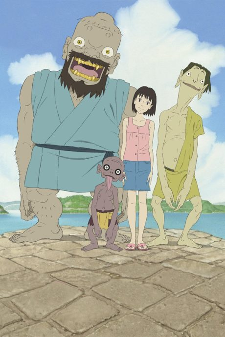

AnimeA Letter to Momo
ももへの手紙
An original anime, so there's no book to continue with.
7.3AniList
—Animeter
1 epMovie
Is there a manga to continue?
StatusOriginal
An anime original, so there is no manga to pick up from.
Sources: AniList, MyAnimeList